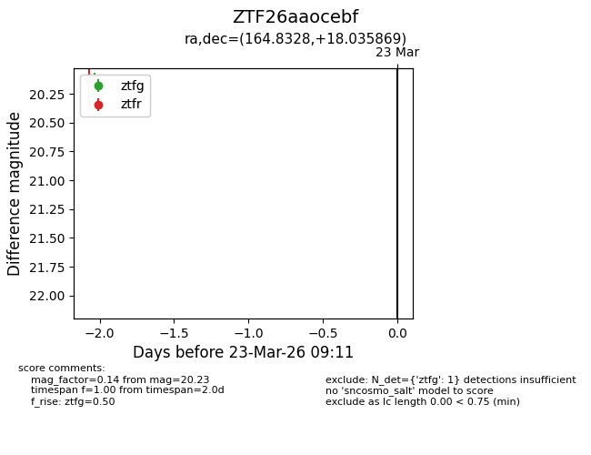
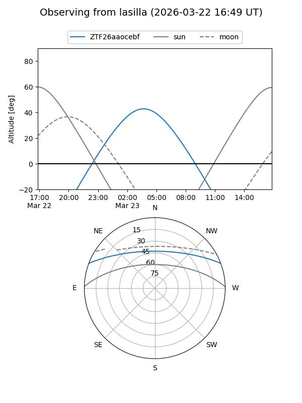
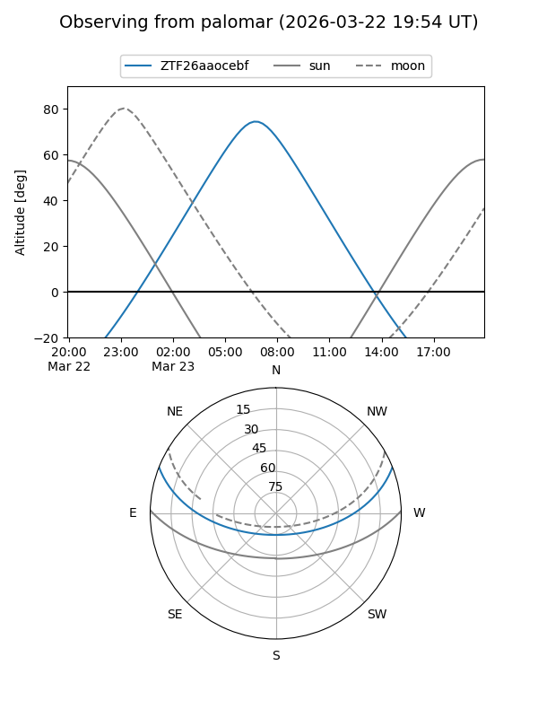

ZTF26aaocebf
Target ZTF26aaocebf at 2026-03-23 09:13
Aliases and brokers:
FINK: link
Lasair: link
ALeRCE: link
alt names
ZTF26aaocebf (ztf,fink_ztf)
Coordinates:
equatorial (ra, dec) = 164.8328,+18.03587
equatorial (HMS+DMS) = 10:59:19.87,+18:02:09.13
galactic (l, b) = (226.4216,+62.64709)
Flags:
Photometry:
last ztfg=20.23
1 ztfg detections
Lightcurve

Visibility


Additional plots